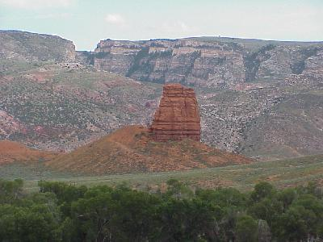
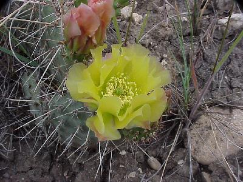
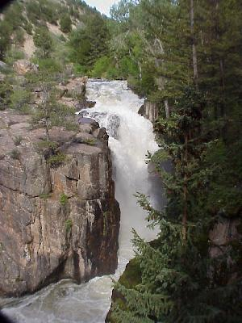

| We started the day early, packing up and leaving camp at 8:30. The weather was great! We drove a few miles back towards Yellowstone to see some of the red rock formations we passed last night at dusk. | |
| These pictures will most likely be far from adequate to illustrate the color and contrast of the red rock cliffs against the green foliage. | |
| And, when the red rock cliffs finaly gave way we had
red hills covered with green grasses and blue sage brush. But we did have a lot of miles of this. |
|
| We finally got a break from the driving and stopped in Cody, Wyoming. Our first stop was the Old Town Museum, a large collection of old stuff surrounding old buildings. | |
| Next was the Plains Indian Pow-Wow, where Plains Indian Tribes competed and demonstrated various activities, including dance and song. | |
| Next was the Buffalo Bill Historical Center, which is
a group of exhibits, including The Plains Indian Museum,
The Buffalo Bill Museum, Special Exhibitions, the Whitney
Gallery of Western Art, The Cody Firearms Museum, and The
McCracken Research Library. My personal favorites were the Whitney Gallery of Western Art, with numerous bronzes, |
|
| and the Cody Firearms Museum, with more than 4000 firearms on display. | |
| After we left Cody we hit the Plains, and drove, and drove, and drove. | |
| And, as we approached those mountains in the far distance the plains started to roll a little and we were back in some of the red rock. |  |
| Then back into the mountains. We made numerous stops to break up the drive, to look at flowering cactus; |  |
| Stream beds; | |
| and Waterfalls. |  |
| We did see a little wildlife today, including this antelope. Close by was another antelope and baby. |  |
| And, an Ospery. | |
| But the highlight of today's travel sights had to be the cattle drive on State Route 14. | |
| A great day for traveling, although a
little hot at times. 299 miles for the day and a
considerable amount of sight seeing. Wildlife for the day was light, but included: mule deer (3); elk (4); antelope (20); and ospery (1). |
|